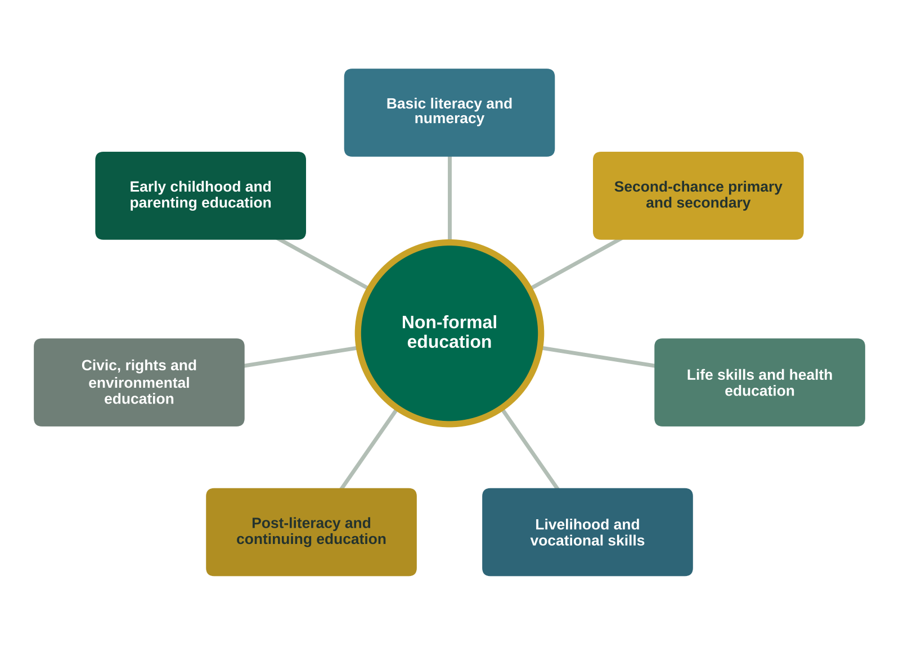
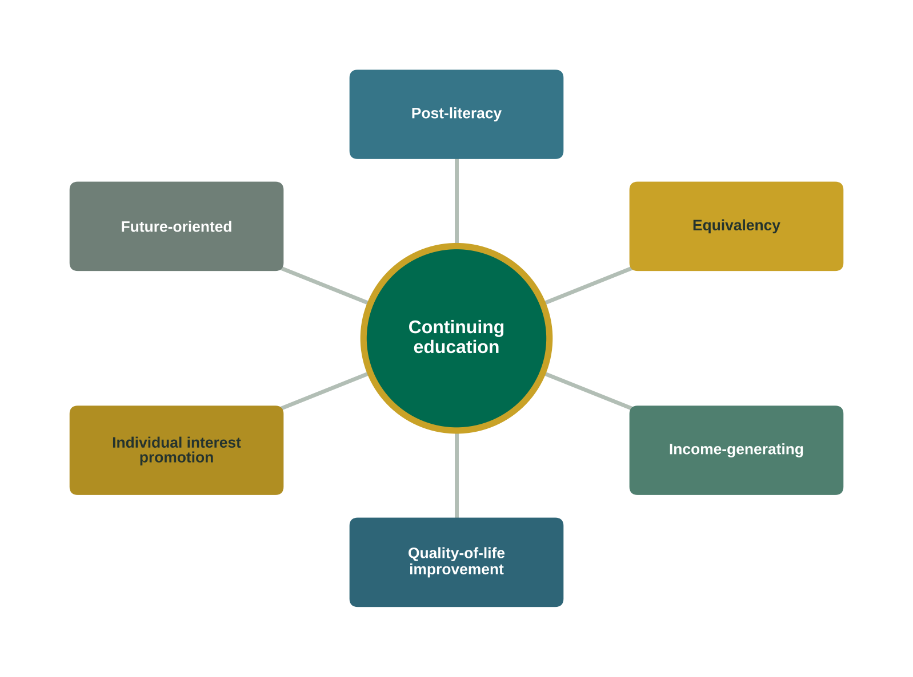
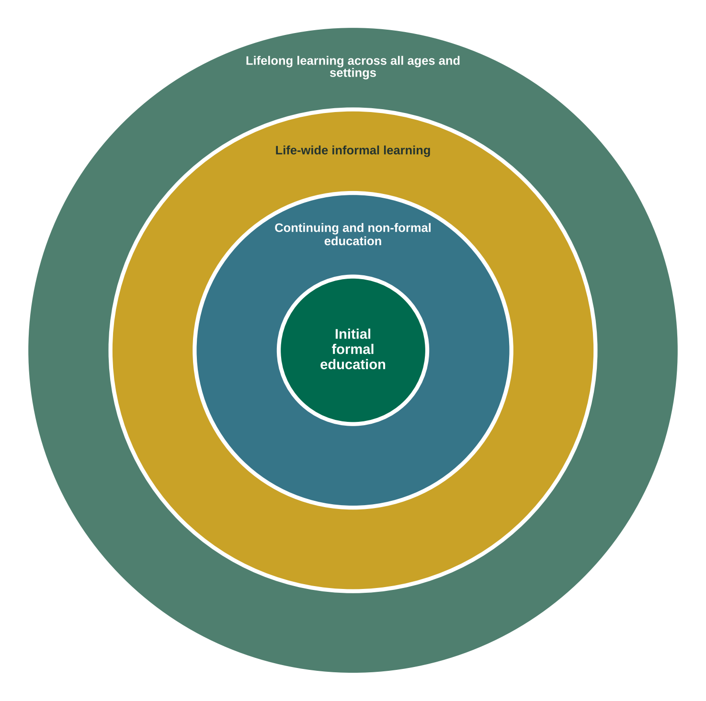
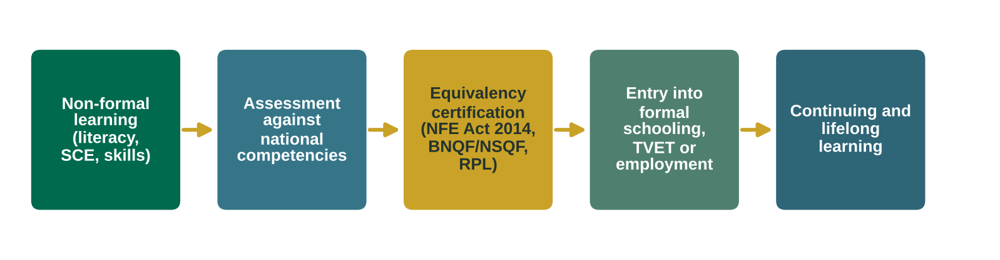
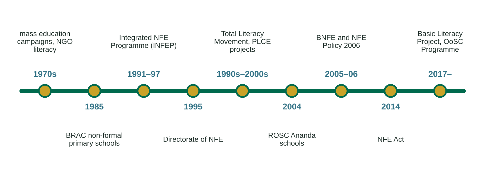
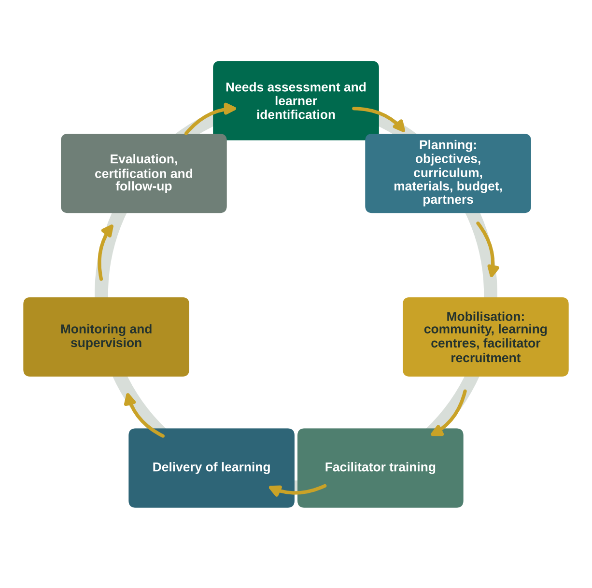

PC 124 উপানুষ্ঠানিক ও জীবনব্যাপী শিক্ষা
উপানুষ্ঠানিক, অব্যাহত ও জীবনব্যাপী শিখন: ধারণা, উন্নয়নশীল দেশের প্রেক্ষাপট, বাংলাদেশের কর্মসূচি ও বাস্তবায়ন
এটি ইংরেজি পাঠ নোটের বাংলা সংস্করণ। পাঠতালিকা ও তথ্যসূত্রের বইয়ের নাম মূল ভাষায় রাখা হয়েছে, যাতে লাইব্রেরিতে সহজে খুঁজে পান।
সূচিপত্র
- ইউনিট ১: উপানুষ্ঠানিক শিক্ষার বিভিন্ন দিক
- ইউনিট ২: অব্যাহত শিক্ষা
- ইউনিট ৩: উন্নয়নশীল দেশে উপানুষ্ঠানিক ও অব্যাহত শিক্ষা
- ইউনিট ৪: বাংলাদেশে উপানুষ্ঠানিক ও জীবনব্যাপী শিক্ষা (NFLE) কার্যক্রম
- ইউনিট ৫: NFLE কার্যক্রম বাস্তবায়ন
- ইউনিট ৬: ভবিষ্যৎ শিক্ষা, জীবনমান ও জীবনব্যাপী শিখন
- পাঠতালিকা
- পরীক্ষা প্রস্তুতি প্রশ্নব্যাংক
- তথ্যসূত্র
এই কোর্স সম্পর্কে
মানুষ সারা জীবনে যা শেখে তার অধিকাংশই আনুষ্ঠানিক বিদ্যালয় শিক্ষার বাইরে ঘটে। এই কোর্সে উপানুষ্ঠানিক শিক্ষা (non-formal education, NFE) ও অব্যাহত শিক্ষাকে (continuing education, CE) মৌলিক শিক্ষা, দক্ষতা, দ্বিতীয় সুযোগ ও জীবনব্যাপী শিখনের (lifelong learning, LLL) পথ হিসেবে পরীক্ষা করা হয়েছে, বিশেষত একটি উন্নয়নশীল দেশ হিসেবে বাংলাদেশের প্রেক্ষাপটে। এতে আলোচিত হয়েছে উপানুষ্ঠানিক শিক্ষার উৎপত্তি, ধারণা ও পরিধি; EFA, UPE, দ্বিতীয় সুযোগের শিক্ষা ও জরুরি অবস্থায় শিক্ষার সঙ্গে এর সম্পর্ক; অব্যাহত শিক্ষা এবং পেশাগত উন্নয়ন, দক্ষতা ও জ্ঞানভিত্তিক সমাজের সঙ্গে এর সম্পর্ক; বাংলাদেশে উপানুষ্ঠানিক ও জীবনব্যাপী শিক্ষার ইতিহাস, অংশীজন ও কার্যক্রম; পরিকল্পনা, ব্যবস্থাপনা ও উপযুক্ত বয়স্ক শিক্ষণপদ্ধতির মাধ্যমে বাস্তবায়ন; এবং জীবনব্যাপী শিখন, জীবনমান ও ভবিষ্যৎ শিক্ষার মধ্যকার সংযোগ।
কোর্সের উদ্দেশ্য
উপানুষ্ঠানিক শিক্ষার উৎপত্তি, ধারণা, বৈশিষ্ট্য, লক্ষ্য ও পরিধি এবং SCE, EiE, EFA ও দক্ষতার সঙ্গে এর সম্পর্ক ব্যাখ্যা করা।
অব্যাহত শিক্ষা এবং CPD, HRD, দক্ষতা, SDG ও জ্ঞানভিত্তিক সমাজের সঙ্গে এর সম্পর্ক ব্যাখ্যা করা।
সমতুল্যতা ও জাতীয় উন্নয়নে ভূমিকাসহ উন্নয়নশীল দেশ ও বাংলাদেশে উপানুষ্ঠানিক ও অব্যাহত শিক্ষা বিশ্লেষণ করা।
NFLE কার্যক্রম, অংশীজন ও বাস্তবায়ন প্রক্রিয়া এবং জীবনমান ও ভবিষ্যৎ শিক্ষায় জীবনব্যাপী শিখনের ভূমিকা বর্ণনা করা।
প্রতিটি ইউনিট অফিশিয়াল পাঠ্যসূচির ক্রম অনুসরণ করে। প্রথমে মূল আলোচনা পড়ুন, তারপর মূল কথা বক্সগুলো, এরপর পরীক্ষার প্রস্তুতি প্রশ্ন দিয়ে নিজেকে যাচাই করুন।
সোনালি বক্স = অবশ্যই মনে রাখার বিষয়। সবুজাভ নীল বক্স = সংজ্ঞা ও পড়ার কৌশল। সবুজ বক্স = বাংলাদেশ প্রেক্ষাপট।
শেষ অধ্যায়টি বিশ্ববিদ্যালয় পরীক্ষার ধরনে একটি প্রশ্নব্যাংক (উত্তরসহ MCQ, সংক্ষিপ্ত ও রচনামূলক প্রশ্ন), এরপর APA 7th রীতিতে পূর্ণ তথ্যসূত্র।
ভর্তি, বাজেট ও নীতি সংক্রান্ত পরিসংখ্যান প্রতি বছর বদলায়। পরীক্ষার আগে BANBEIS, DPE, UGC ও UNESCO-এর সর্বশেষ তথ্য দেখে নিন।
ইউনিট ১: উপানুষ্ঠানিক শিক্ষার বিভিন্ন দিক
অধ্যায়ের সারসংক্ষেপ
"উপানুষ্ঠানিক শিক্ষা" পরিভাষাটি ফিলিপ এইচ. কুম্বসের (Philip H. Coombs) The World Educational Crisis: A Systems Analysis (1968) গ্রন্থের মাধ্যমে প্রাধান্য লাভ করে। এতে যুক্তি দেওয়া হয় যে উন্নয়নশীল দেশগুলোর আনুষ্ঠানিক বিদ্যালয়ব্যবস্থা ক্রমবর্ধমান চাহিদা পূরণ করতে পারছে না, তা ব্যয়বহুল এবং প্রায়ই অপ্রাসঙ্গিক, তাই সংগঠিত শিখনের বিকল্প রূপ প্রয়োজন।
এই অধ্যায়ে যা আছে: উপানুষ্ঠানিক শিক্ষার উৎপত্তি; ধারণা ও সংজ্ঞা; প্রধান বৈশিষ্ট্য; পরিধি; লক্ষ্য, উদ্দেশ্য, তাৎপর্য ও লক্ষ্যভুক্ত জনগোষ্ঠী; উপানুষ্ঠানিক শিক্ষা ও দ্বিতীয় সুযোগের শিক্ষা (SCE); জরুরি অবস্থায় শিক্ষা: স্থানীয় ও বৈশ্বিক দৃষ্টিভঙ্গি; EFA, UPE, CPE, OoSC ও CE-এর সঙ্গে উপানুষ্ঠানিক শিক্ষার সম্পর্ক; দক্ষতা অর্জন ও উপানুষ্ঠানিক শিক্ষার ভূমিকা।
মূল পরিভাষা:
- উপানুষ্ঠানিক শিক্ষা (Coombs & Ahmed, 1974): "আনুষ্ঠানিক ব্যবস্থার কাঠামোর বাইরে পরিচালিত যেকোনো সংগঠিত, নিয়মতান্ত্রিক শিক্ষামূলক কার্যক্রম, যার উদ্দেশ্য জনগোষ্ঠীর নির্দিষ্ট উপগোষ্ঠীকে, প্রাপ্তবয়স্ক ও শিশু উভয়কে, নির্বাচিত ধরনের শিখন প্রদান করা।"
- উপানুষ্ঠানিক শিক্ষা (UNESCO ISCED, 2011): এমন শিক্ষা যা প্রাতিষ্ঠানিক, উদ্দেশ্যমূলক এবং কোনো শিক্ষা প্রদানকারী কর্তৃক পরিকল্পিত, এবং যার সংজ্ঞায়ক বৈশিষ্ট্য হলো এটি ব্যক্তির জীবনব্যাপী শিখন প্রক্রিয়ায় আনুষ্ঠানিক শিক্ষার সংযোজন, বিকল্প এবং/অথবা পরিপূরক…
শিক্ষাক্রমে যা বলা হয়েছেইউনিট ১: উপানুষ্ঠানিক শিক্ষার বিভিন্ন দিক · ৫ কন্টাক্ট আওয়ার
এই ইউনিট শেষে শিক্ষার্থীরা যা পারবে
- সাধারণ দৃষ্টিভঙ্গি এবং উন্নয়নশীল দেশ হিসেবে বাংলাদেশের বিশেষ পটভূমি তুলে ধরে বিভিন্ন প্রেক্ষাপটে উপানুষ্ঠানিক শিক্ষার ব্যঞ্জনাগত অর্থ ও তাৎপর্য ব্যাখ্যা করতে
- উপানুষ্ঠানিক শিক্ষার উৎপত্তি, ধারণা, সংজ্ঞা, প্রধান বৈশিষ্ট্য ও পরিধি
- উপানুষ্ঠানিক শিক্ষার লক্ষ্য, উদ্দেশ্য, তাৎপর্য ও লক্ষ্যভুক্ত জনগোষ্ঠী
- দ্বিতীয় সুযোগের শিক্ষার (Second Chance Education, SCE) সঙ্গে উপানুষ্ঠানিক শিক্ষার সম্পর্ক
- জরুরি অবস্থায় শিক্ষা (Education in Emergency, EE): স্থানীয় ও বৈশ্বিক দৃষ্টিভঙ্গি
- EFA, UPE, CPE, OoSC ও CE-এর সঙ্গে উপানুষ্ঠানিক শিক্ষার সম্পর্ক
- দক্ষতা অর্জন ও উপানুষ্ঠানিক শিক্ষার ভূমিকা
১.১ উপানুষ্ঠানিক শিক্ষার উৎপত্তি
"উপানুষ্ঠানিক শিক্ষা" (non-formal education) পরিভাষাটি ফিলিপ এইচ. কুম্বসের (Philip H. Coombs) The World Educational Crisis: A Systems Analysis (1968) গ্রন্থের মাধ্যমে প্রাধান্য লাভ করে। এতে যুক্তি দেওয়া হয় যে উন্নয়নশীল দেশগুলোর আনুষ্ঠানিক বিদ্যালয়ব্যবস্থা ক্রমবর্ধমান চাহিদা পূরণ করতে পারছে না, তা ব্যয়বহুল এবং প্রায়ই অপ্রাসঙ্গিক, তাই সংগঠিত শিখনের বিকল্প রূপ প্রয়োজন। কুম্বস ও মনজুর আহমেদ (Manzoor Ahmed) বিশ্বব্যাংক ও ICED-এর জন্য পরিচালিত গবেষণায় আনুষ্ঠানিক/উপানুষ্ঠানিক/অনানুষ্ঠানিক শ্রেণিবিন্যাস গড়ে তোলেন (Coombs, Prosser & Ahmed, 1973; Coombs & Ahmed, 1974)। এর পেছনে প্রভাব ছিল পাওলো ফ্রেইরির (Paulo Freire) গণশিক্ষা, ইভান ইলিচের (Ivan Illich) Deschooling Society (1971), ফোর প্রতিবেদন Learning to Be (1972) এবং সমাজ উন্নয়ন ও বয়স্ক সাক্ষরতা আন্দোলনের।
১.২ ধারণা ও সংজ্ঞা
উপানুষ্ঠানিক শিক্ষা (Coombs & Ahmed, 1974): "আনুষ্ঠানিক ব্যবস্থার কাঠামোর বাইরে পরিচালিত যেকোনো সংগঠিত, নিয়মতান্ত্রিক শিক্ষামূলক কার্যক্রম, যার উদ্দেশ্য জনগোষ্ঠীর নির্দিষ্ট উপগোষ্ঠীকে, প্রাপ্তবয়স্ক ও শিশু উভয়কে, নির্বাচিত ধরনের শিখন প্রদান করা।"
উপানুষ্ঠানিক শিক্ষা (UNESCO ISCED, 2011): এমন শিক্ষা যা প্রাতিষ্ঠানিক, উদ্দেশ্যমূলক এবং কোনো শিক্ষা প্রদানকারী কর্তৃক পরিকল্পিত, এবং যার সংজ্ঞায়ক বৈশিষ্ট্য হলো এটি ব্যক্তির জীবনব্যাপী শিখন প্রক্রিয়ায় আনুষ্ঠানিক শিক্ষার সংযোজন, বিকল্প এবং/অথবা পরিপূরক।
বাংলাদেশের উপানুষ্ঠানিক শিক্ষা আইন ২০১৪ অনুযায়ী উপানুষ্ঠানিক শিক্ষা হলো বিদ্যালয়বহির্ভূত শিশু, কিশোর-কিশোরী, যুব ও বয়স্কদের জন্য নমনীয় পন্থায় আনুষ্ঠানিক ব্যবস্থার বাইরে প্রদত্ত শিক্ষা, যার মধ্যে রয়েছে মৌলিক সাক্ষরতা, জীবন দক্ষতা, জীবিকায়ন দক্ষতা ও অব্যাহত শিক্ষা।
১.৩ প্রধান বৈশিষ্ট্য
সংগঠিত ও উদ্দেশ্যমূলক, তবে সময়, স্থান, শিক্ষাক্রম ও মেয়াদের ক্ষেত্রে নমনীয়।
শিক্ষার্থীকেন্দ্রিক ও চাহিদাভিত্তিক: বিষয়বস্তু শিক্ষার্থীদের জীবন ও চাহিদা থেকে নেওয়া।
স্বল্পমেয়াদি ও খণ্ডকালীন, কাজ ও পরিবারের সঙ্গে সামঞ্জস্যপূর্ণ।
স্বল্প ব্যয়: সমাজের সুযোগ-সুবিধা ও স্থানীয় সহায়তাকারী ব্যবহার করে।
অংশগ্রহণমূলক: পরিকল্পনায় শিক্ষার্থী ও সমাজ সম্পৃক্ত থাকে।
বিচিত্র প্রদানকারী: সরকার, এনজিও, সামাজিক সংগঠন, নিয়োগকর্তা।
সুবিধাবঞ্চিত গোষ্ঠীর ওপর গুরুত্ব: বিদ্যালয়বহির্ভূত শিশু, নিরক্ষর বয়স্ক, নারী, দরিদ্র, কর্মজীবী শিশু।
সনদ প্রদান করতেও পারে, না-ও পারে; ক্রমবর্ধমানভাবে আনুষ্ঠানিক শিক্ষার সঙ্গে সমতুল্যতার সঙ্গে যুক্ত।
১.৪ পরিধি
সাক্ষরতা ও গণনদক্ষতা; সাক্ষরতা-উত্তর ও অব্যাহত শিক্ষা; দ্বিতীয় সুযোগের প্রাথমিক শিক্ষা; জীবন দক্ষতা; জীবিকায়ন ও বৃত্তিমূলক দক্ষতা; স্বাস্থ্য, পুষ্টি, জনসংখ্যা ও পারিবারিক জীবন শিক্ষা; কৃষি সম্প্রসারণ; নাগরিক ও অধিকার শিক্ষা; পরিবেশ শিক্ষা; প্রারম্ভিক শৈশব বিকাশ; এবং সমাজ উন্নয়ন।

চিত্র ১. উপানুষ্ঠানিক শিক্ষার পরিধি
১.৫ লক্ষ্য, উদ্দেশ্য, তাৎপর্য ও লক্ষ্যভুক্ত জনগোষ্ঠী
লক্ষ্য: আনুষ্ঠানিক শিক্ষা থেকে বাদ পড়াদের মৌলিক শিক্ষা ও শিখনের সুযোগ প্রদান; নিরক্ষরতা হ্রাস; জীবিকার জন্য দক্ষতা বৃদ্ধি; ব্যক্তি ও সমাজের ক্ষমতায়ন; এবং জীবনব্যাপী শিখনে সহায়তা।
উদ্দেশ্য: সাক্ষরতা ও গণনদক্ষতা; জীবন ও জীবিকায়ন দক্ষতা; অধিকার ও দায়িত্ব সম্পর্কে সচেতনতা; উন্নত স্বাস্থ্য ও জীবনমান; এবং আনুষ্ঠানিক শিক্ষায় ফিরে যাওয়ার পথ।
তাৎপর্য: আনুষ্ঠানিক শিক্ষার পরিপূরক; সবচেয়ে দুর্গম জনগোষ্ঠীর কাছে পৌঁছায়; ব্যয়সাশ্রয়ী; স্থানীয় চাহিদার সঙ্গে প্রাসঙ্গিক; জাতীয় উন্নয়ন ও SDG অর্জনে সহায়ক।
লক্ষ্যভুক্ত জনগোষ্ঠী: বিদ্যালয়বহির্ভূত শিশু (৮–১৪ বছর); ঝরে পড়া কিশোর-কিশোরী ও যুব; নিরক্ষর ও নবসাক্ষর বয়স্ক; নারী; কর্মজীবী শিশু; শহরের বস্তিবাসী; ক্ষুদ্র নৃগোষ্ঠী; প্রতিবন্ধী ব্যক্তি; শরণার্থী ও দুর্যোগকবলিত মানুষ।
১.৬ উপানুষ্ঠানিক শিক্ষা ও দ্বিতীয় সুযোগের শিক্ষা (SCE)
দ্বিতীয় সুযোগের শিক্ষা (second-chance education) বিদ্যালয়ে ভর্তি হতে না পারা বা ঝরে পড়া শিক্ষার্থীদের মৌলিক শিক্ষা ও যোগ্যতা অর্জনের নতুন সুযোগ দেয়, প্রায়ই ত্বরিত শিখন কার্যক্রমের (accelerated learning programmes) মাধ্যমে, যা প্রাথমিক শিক্ষাক্রমকে সংকুচিত করে (যেমন পাঁচ বছরের পাঠ তিন বা চার বছরে)। উপানুষ্ঠানিক শিক্ষাই দ্বিতীয় সুযোগের শিক্ষার প্রধান মাধ্যম। বাংলাদেশে BNFE-এর অধীন বিদ্যালয়বহির্ভূত শিশু (OoSC) কর্মসূচি এবং পূর্ববর্তী কর্মসূচি যেমন ROSC (আনন্দ স্কুল) ও BRAC-এর উপানুষ্ঠানিক প্রাথমিক বিদ্যালয় এর উদাহরণ। SDG 4.1 ও 4.6 এ ধরনের পথ তৈরির আহ্বান জানায়।
১.৭ জরুরি অবস্থায় শিক্ষা: স্থানীয় ও বৈশ্বিক দৃষ্টিভঙ্গি
বৈশ্বিক: INEE ন্যূনতম মানদণ্ড (২০১০); Education Cannot Wait তহবিল (২০১৬); Global Education Cluster; শরণার্থী শিক্ষা কৌশল (UNHCR-এর Refugee Education 2030)। আনুষ্ঠানিক বিদ্যালয় ব্যাহত হলে উপানুষ্ঠানিক পন্থা (অস্থায়ী শিখন স্থান, ত্বরিত শিখন, বেতার শিক্ষা) প্রায়ই প্রথম সাড়া হিসেবে কাজ করে।
স্থানীয় (বাংলাদেশ): রোহিঙ্গা শিশুদের জন্য শিখন কেন্দ্র (LCFA, Myanmar Curriculum Pilot); বন্যার সময় শিখনের ধারাবাহিকতা (নৌকা স্কুল, যেমন সিধুলাই স্বনির্ভর সংস্থার ভাসমান স্কুল); এবং COVID-19-এর সময় দূরশিখন।
১.৮ EFA, UPE, CPE, OoSC ও CE-এর সঙ্গে উপানুষ্ঠানিক শিক্ষার সম্পর্ক
| পরিভাষা | অর্থ | উপানুষ্ঠানিক শিক্ষার সঙ্গে সম্পর্ক |
|---|---|---|
| EFA (সবার জন্য শিক্ষা) | সব শিশু, যুব ও বয়স্কের মৌলিক শিখন চাহিদা পূরণের বৈশ্বিক অঙ্গীকার (জমতিয়েন ১৯৯০, ডাকার ২০০০) | EFA-এর লক্ষ্য ৩ (যুব ও বয়স্ক শিখন) ও লক্ষ্য ৪ (বয়স্ক সাক্ষরতা) অর্জনে উপানুষ্ঠানিক শিক্ষা অপরিহার্য হিসেবে স্বীকৃত হয় |
| UPE (সর্বজনীন প্রাথমিক শিক্ষা) | প্রাথমিক বয়সের সব শিশুর প্রাথমিক বিদ্যালয়ে ভর্তি ও তা সমাপ্তি (MDG 2) | যেসব শিশু আনুষ্ঠানিক বিদ্যালয়ে যেতে পারে না, উপানুষ্ঠানিক শিক্ষা তাদের জন্য বিকল্প পথ তৈরি করে |
| CPE (বাধ্যতামূলক প্রাথমিক শিক্ষা) | আইনের মাধ্যমে প্রাথমিক শিক্ষা বাধ্যতামূলককরণ (বাংলাদেশ, ১৯৯০) | বাধ্যতামূলক বিদ্যালয় শিক্ষার আওতার বাইরে থাকা ব্যক্তিদের (যেমন অধিক বয়সী শিশু) উপানুষ্ঠানিক শিক্ষা সহায়তা করে |
| OoSC (বিদ্যালয়বহির্ভূত শিশু) | বিদ্যালয়গামী বয়সের যেসব শিশু ভর্তি হয়নি বা ঝরে পড়েছে | দ্বিতীয় সুযোগের উপানুষ্ঠানিক শিক্ষার প্রধান লক্ষ্যভুক্ত গোষ্ঠী |
| CE (অব্যাহত শিক্ষা) | প্রাথমিক পর্যায়ের শিক্ষা শেষ হওয়ার পরের শিখন | উপানুষ্ঠানিক শিক্ষা প্রায়ই সাক্ষরতা-উত্তর ও অব্যাহত শিক্ষা প্রদান করে |
১.৯ দক্ষতা অর্জন ও উপানুষ্ঠানিক শিক্ষার ভূমিকা
উপানুষ্ঠানিক শিক্ষা ভিত্তিমূলক দক্ষতা (সাক্ষরতা, গণনদক্ষতা, ডিজিটাল সাক্ষরতা), জীবন দক্ষতা (WHO-এর দশটি মূল জীবন দক্ষতা: সিদ্ধান্ত গ্রহণ, সমস্যা সমাধান, সৃজনশীল চিন্তন, সমালোচনামূলক চিন্তন, কার্যকর যোগাযোগ, আন্তঃব্যক্তিক দক্ষতা, আত্মসচেতনতা, সমানুভূতি, আবেগ মোকাবিলা ও মানসিক চাপ মোকাবিলা), জীবিকায়ন ও বৃত্তিমূলক দক্ষতা (দরজির কাজ, হাঁস-মুরগি পালন, মোবাইল মেরামত, হস্তশিল্প) এবং উদ্যোক্তা ও আর্থিক দক্ষতা গড়ে তোলে। এটি SDG লক্ষ্যমাত্রা 4.4 (কর্মসংস্থানের দক্ষতা) ও 4.6 (সাক্ষরতা) অর্জনে অবদান রাখে।
ইউনিট ২: অব্যাহত শিক্ষা
অধ্যায়ের সারসংক্ষেপ
উন্নয়নশীল দেশে অব্যাহত শিক্ষা বলতে সাক্ষরতা-উত্তর ও অনুসরণমূলক কার্যক্রমকেও বোঝায়, যা নবসাক্ষরদের পুনরায় নিরক্ষরতায় ফিরে যাওয়া প্রতিরোধ করে এবং জীবনে সাক্ষরতা প্রয়োগে সহায়তা করে (UNESCO-র অব্যাহত শিক্ষা কাঠামো; Ahmed & Ouane, 1987)।
এই অধ্যায়ে যা আছে: ধারণা, সংজ্ঞা, লক্ষ্য, উদ্দেশ্য ও গুরুত্ব; শিক্ষা, উপানুষ্ঠানিক শিক্ষা ও পরবর্তী শিখনের সঙ্গে অব্যাহত শিক্ষার সম্পর্ক; অব্যাহত শিক্ষার সুবিধাভোগী ও প্রকারভেদ; CPD ও HRD-এর সঙ্গে অব্যাহত শিক্ষার সম্পর্ক; দক্ষতার সঙ্গে অব্যাহত শিক্ষার সম্পর্ক; অব্যাহত শিক্ষা, SDG, জীবনব্যাপী শিক্ষা ও জ্ঞানভিত্তিক অর্থনীতি।
মূল পরিভাষা:
- অব্যাহত শিক্ষা: প্রাথমিক পর্যায়ের শিক্ষা সমাপ্তির পর আনুষ্ঠানিক ব্যবস্থা থেকে বেরিয়ে আসা ব্যক্তিরা ব্যক্তিগত, পেশাগত বা সামাজিক উদ্দেশ্যে জ্ঞান ও দক্ষতা হালনাগাদ, প্রসারিত বা গভীর করার জন্য যেসব শিখন কার্যক্রমে অংশ নেন।
শিক্ষাক্রমে যা বলা হয়েছেইউনিট ২: অব্যাহত শিক্ষা · ৫ কন্টাক্ট আওয়ার
এই ইউনিট শেষে শিক্ষার্থীরা যা পারবে
- বিভিন্ন প্রেক্ষাপটে অব্যাহত শিক্ষার ভূমিকার যৌক্তিকতা প্রতিষ্ঠা করতে
- অব্যাহত শিক্ষার ধারণা, সংজ্ঞা, লক্ষ্য, উদ্দেশ্য ও গুরুত্ব
- শিক্ষা, উপানুষ্ঠানিক শিক্ষা ও পরবর্তী শিখনের সঙ্গে অব্যাহত শিক্ষার সম্পর্ক
- অব্যাহত শিক্ষার সুবিধাভোগী ও প্রকারভেদ
- CPD ও HRD-এর সঙ্গে অব্যাহত শিক্ষার সম্পর্ক
- দক্ষতার সঙ্গে অব্যাহত শিক্ষার সম্পর্ক
- SDG অর্জন, জীবনব্যাপী শিক্ষা (LE) এবং জ্ঞানভিত্তিক অর্থনীতি (KE) ও জ্ঞানভিত্তিক সমাজ (KBS) গঠনের সঙ্গে অব্যাহত শিক্ষার সম্পর্ক
২.১ ধারণা, সংজ্ঞা, লক্ষ্য, উদ্দেশ্য ও গুরুত্ব
অব্যাহত শিক্ষা (continuing education): প্রাথমিক পর্যায়ের শিক্ষা সমাপ্তির পর আনুষ্ঠানিক ব্যবস্থা থেকে বেরিয়ে আসা ব্যক্তিরা ব্যক্তিগত, পেশাগত বা সামাজিক উদ্দেশ্যে জ্ঞান ও দক্ষতা হালনাগাদ, প্রসারিত বা গভীর করার জন্য যেসব শিখন কার্যক্রমে অংশ নেন।
উন্নয়নশীল দেশে অব্যাহত শিক্ষা বলতে সাক্ষরতা-উত্তর (post-literacy) ও অনুসরণমূলক কার্যক্রমকেও বোঝায়, যা নবসাক্ষরদের পুনরায় নিরক্ষরতায় ফিরে যাওয়া প্রতিরোধ করে এবং জীবনে সাক্ষরতা প্রয়োগে সহায়তা করে (UNESCO-র অব্যাহত শিক্ষা কাঠামো; Ahmed & Ouane, 1987)।
লক্ষ্য: সাক্ষরতা বজায় রাখা ও বৃদ্ধি করা; দক্ষতার মানোন্নয়ন; পেশাগত বিকাশে সহায়তা; ব্যক্তিগত বিকাশের সুযোগ সৃষ্টি; সক্রিয় নাগরিকত্বের প্রসার; এবং সমাজ উন্নয়নে সহায়তা।
গুরুত্ব: জ্ঞান ও প্রযুক্তির দ্রুত পরিবর্তনের ফলে প্রাথমিক পর্যায়ের শিক্ষা অপর্যাপ্ত হয়ে পড়ে; কর্মীদের পুনর্দক্ষতা প্রয়োজন; নবসাক্ষরদের দক্ষতা সুদৃঢ় করা প্রয়োজন; এবং সমাজের প্রয়োজন সচেতন ও খাপ খাইয়ে নিতে সক্ষম নাগরিক।
২.২ শিক্ষা, উপানুষ্ঠানিক শিক্ষা ও পরবর্তী শিখনের সঙ্গে অব্যাহত শিক্ষার সম্পর্ক
অব্যাহত শিক্ষা জীবনব্যাপী শিখনের বৃহত্তর ধারণার অংশ। এটি আনুষ্ঠানিক (সান্ধ্যকালীন ডিগ্রি কোর্স, উন্মুক্ত বিশ্ববিদ্যালয়ের কার্যক্রম), উপানুষ্ঠানিক (প্রশিক্ষণ কর্মশালা, সমাজভিত্তিক শিখন কেন্দ্রের কোর্স) বা অনানুষ্ঠানিক (স্ব-অধ্যয়ন, পঠন) হতে পারে। পরবর্তী শিখনের (further learning) মধ্যে রয়েছে বয়স্কদের জন্য পরবর্তী শিক্ষা (মাধ্যমিক-উত্তর, বিশ্ববিদ্যালয়-বহির্ভূত) ও উচ্চশিক্ষা।
২.৩ অব্যাহত শিক্ষার সুবিধাভোগী ও প্রকারভেদ
সুবিধাভোগী: নবসাক্ষর; বিদ্যালয় থেকে ঝরে পড়া শিক্ষার্থী; কর্মী ও পেশাজীবী; নারী; কৃষক; বেকার; প্রবীণ নাগরিক; এবং সমাজের নেতৃবৃন্দ।
প্রকারভেদ (সাক্ষরতা-উত্তর ও অব্যাহত শিক্ষার জন্য UNESCO-র শ্রেণিবিন্যাস, Ahmed & Ouane, 1987; Ouane, 1989):
সাক্ষরতা-উত্তর কার্যক্রম: সাক্ষরতা দক্ষতা সুসংহতকরণ।
সমতুল্যতা কার্যক্রম: আনুষ্ঠানিক শিক্ষার বিকল্প, যা সমমানের সনদ প্রদান করে।
আয়বর্ধক কার্যক্রম: উপার্জনের জন্য বৃত্তিমূলক দক্ষতা।
জীবনমান উন্নয়ন কার্যক্রম: স্বাস্থ্য, পুষ্টি, পরিবেশ।
ব্যক্তিগত আগ্রহ বিকাশ কার্যক্রম: শখ, সংস্কৃতি, ধর্ম, খেলাধুলা।
ভবিষ্যৎমুখী কার্যক্রম: নতুন দক্ষতা ও প্রযুক্তি।

চিত্র ২. অব্যাহত শিক্ষা কার্যক্রমের প্রকারভেদ (UNESCO, Ouane, 1989 অনুসারে)
২.৪ CPD ও HRD-এর সঙ্গে অব্যাহত শিক্ষার সম্পর্ক
নিরবচ্ছিন্ন পেশাগত উন্নয়ন (Continuing Professional Development, CPD): একজন পেশাজীবীর সমগ্র কর্মজীবন জুড়ে জ্ঞান ও দক্ষতার নিয়মতান্ত্রিক রক্ষণাবেক্ষণ, উন্নয়ন ও প্রসার (যেমন শিক্ষকদের CPD, চিকিৎসকদের CPD)। CPD-এর বড় অংশই অব্যাহত শিক্ষার মাধ্যমে সম্পন্ন হয়।
মানবসম্পদ উন্নয়ন (Human Resource Development, HRD): মানুষের সক্ষমতা বিকাশের প্রাতিষ্ঠানিক ও জাতীয় প্রক্রিয়া। অব্যাহত শিক্ষা মানবসম্পদ উন্নয়নের একটি মূল কৌশল, যা জনসংখ্যাকে উৎপাদনশীল মানবপুঁজিতে রূপান্তরিত করে।
২.৫ দক্ষতার সঙ্গে অব্যাহত শিক্ষার সম্পর্ক
অব্যাহত শিক্ষা দক্ষতা উন্নয়ন (upskilling; বর্তমান দক্ষতার উন্নতি) ও পুনর্দক্ষতা অর্জন (reskilling; নতুন কাজের জন্য নতুন দক্ষতা শেখা) সম্ভব করে। চতুর্থ শিল্পবিপ্লবে স্বয়ংক্রিয়করণ ও AI-এর কারণে পুনর্দক্ষতা অর্জন অপরিহার্য হয়ে উঠেছে। পূর্বশিখনের স্বীকৃতি (Recognition of Prior Learning, RPL) অনানুষ্ঠানিকভাবে অর্জিত দক্ষতাকে সনদায়িত করার সুযোগ দেয় (বাংলাদেশে জাতীয় দক্ষতা উন্নয়ন কর্তৃপক্ষের RPL ব্যবস্থার অধীনে)।
২.৬ অব্যাহত শিক্ষা, SDG, জীবনব্যাপী শিক্ষা ও জ্ঞানভিত্তিক অর্থনীতি
SDG 4 সবার জন্য জীবনব্যাপী শিখনের সুযোগ প্রসারিত করে; লক্ষ্যমাত্রা 4.3, 4.4 ও 4.6 সরাসরি অব্যাহত শিক্ষার সঙ্গে যুক্ত।
জীবনব্যাপী শিক্ষা (Lifelong education, LE): এই নীতি যে শিক্ষা সারা জীবন ধরে প্রাপ্য হওয়া উচিত (Faure, 1972; Delors, 1996)।
জ্ঞানভিত্তিক অর্থনীতি (Knowledge economy, KE): এমন অর্থনীতি, যার প্রবৃদ্ধি জ্ঞানের উৎপাদন, বিতরণ ও ব্যবহারের ওপর নির্ভর করে (OECD, 1996)। জ্ঞানভিত্তিক সমাজ (Knowledge-based society, KBS): এমন সমাজ, যা সমৃদ্ধি ও কল্যাণের জন্য জ্ঞান সৃষ্টি, বিনিময় ও ব্যবহার করে (UNESCO, 2005, Towards Knowledge Societies)। উভয়ের জন্যই অব্যাহত শিক্ষা অপরিহার্য।

চিত্র ৩. জীবনব্যাপী শিখন সমগ্র জীবনকাল জুড়ে আনুষ্ঠানিক, উপানুষ্ঠানিক ও অনানুষ্ঠানিক শিখনকে অন্তর্ভুক্ত করে
ইউনিট ৩: উন্নয়নশীল দেশে উপানুষ্ঠানিক ও অব্যাহত শিক্ষা
অধ্যায়ের সারসংক্ষেপ
উন্নয়নশীল সমাজের বৈশিষ্ট্য হলো নিম্ন মাথাপিছু আয়, বৃহৎ গ্রামীণ ও অনানুষ্ঠানিক খাত, দ্রুত জনসংখ্যা বৃদ্ধি বা বিপুল যুব জনগোষ্ঠী, উচ্চ দারিদ্র্য ও বৈষম্য, সীমিত অবকাঠামো ও জনসেবা, উচ্চ নিরক্ষরতা, জেন্ডার বৈষম্য, দুর্যোগ-ঝুঁকি এবং প্রাথমিক উৎপাদনের ওপর নির্ভরশীলতা (Todaro & Smith, 2020)। শিক্ষার ওপর প্রভাব: বিপুলসংখ্যক বিদ্যালয়বহির্ভূত শিশু ও নিরক্ষর…
এই অধ্যায়ে যা আছে: উন্নয়নশীল সমাজের ধারণা ও বৈশিষ্ট্য; বাংলাদেশে শিখন চাহিদা, প্রয়োজন ও সুযোগ; আনুষ্ঠানিক শিক্ষার সঙ্গে উপানুষ্ঠানিক ও অব্যাহত শিক্ষার সংযোগ ও সমতুল্যতা; জাতীয় উন্নয়নে উপানুষ্ঠানিক ও অব্যাহত শিক্ষার ভূমিকা।
শিক্ষাক্রমে যা বলা হয়েছেইউনিট ৩: উন্নয়নশীল দেশে উপানুষ্ঠানিক ও অব্যাহত শিক্ষা · ৫ কন্টাক্ট আওয়ার
এই ইউনিট শেষে শিক্ষার্থীরা যা পারবে
- উন্নয়নশীল দেশের তাৎপর্য ব্যাখ্যা করতে
- বাংলাদেশের প্রেক্ষাপটে উন্নয়নশীল দেশগুলোর শিখন চাহিদা বর্ণনা করতে
- বাংলাদেশে আনুষ্ঠানিক শিক্ষার সঙ্গে উপানুষ্ঠানিক ও অব্যাহত শিক্ষার সম্পর্ক প্রতিষ্ঠা করতে
- উন্নয়নশীল সমাজের ধারণা, অর্থ, তাৎপর্য ও বৈশিষ্ট্য
- উন্নয়নশীল সমাজে শিখন চাহিদা, প্রয়োজন ও সুযোগ, বিশেষ গুরুত্বসহ
- বাংলাদেশে আনুষ্ঠানিক শিক্ষার সঙ্গে উপানুষ্ঠানিক ও অব্যাহত শিক্ষার সংযোগ ও সমতুল্যতা
- জাতীয় উন্নয়নে উপানুষ্ঠানিক ও অব্যাহত শিক্ষার ভূমিকা: সামাজিক, অর্থনৈতিক, সাংস্কৃতিক, নৈতিক ও মূল্যবোধগত
৩.১ উন্নয়নশীল সমাজের ধারণা ও বৈশিষ্ট্য
উন্নয়নশীল সমাজের বৈশিষ্ট্য হলো নিম্ন মাথাপিছু আয়, বৃহৎ গ্রামীণ ও অনানুষ্ঠানিক খাত, দ্রুত জনসংখ্যা বৃদ্ধি বা বিপুল যুব জনগোষ্ঠী, উচ্চ দারিদ্র্য ও বৈষম্য, সীমিত অবকাঠামো ও জনসেবা, উচ্চ নিরক্ষরতা, জেন্ডার বৈষম্য, দুর্যোগ-ঝুঁকি এবং প্রাথমিক উৎপাদনের ওপর নির্ভরশীলতা (Todaro & Smith, 2020)। শিক্ষার ওপর প্রভাব: বিপুলসংখ্যক বিদ্যালয়বহির্ভূত শিশু ও নিরক্ষর বয়স্ক; সীমিত সরকারি তহবিল; কাজ ও জীবনধারণের প্রতিযোগী চাহিদা; এবং প্রাসঙ্গিক, নমনীয় ও স্বল্পব্যয়ী শিক্ষার প্রয়োজনীয়তা।
৩.২ বাংলাদেশে শিখন চাহিদা, প্রয়োজন ও সুযোগ
প্রয়োজন: মৌলিক সাক্ষরতা ও গণনদক্ষতা (BBS-এর সাম্প্রতিক প্রাক্কলন অনুযায়ী ১৫+ বছর বয়সী বয়স্কদের প্রায় তিন-চতুর্থাংশ সাক্ষর, অর্থাৎ কয়েক কোটি মানুষ এখনো নিরক্ষর); লক্ষ লক্ষ বিদ্যালয়বহির্ভূত শিশুর জন্য দ্বিতীয় সুযোগের শিক্ষা; বিপুল যুব জনগোষ্ঠীর জন্য দক্ষতা; ডিজিটাল সাক্ষরতা; জীবন দক্ষতা (স্বাস্থ্য, পুষ্টি, অধিকার, দুর্যোগ প্রস্তুতি); এবং আর্থিক সাক্ষরতা।
চাহিদা: সনদ ও চাকরির জন্য ক্রমবর্ধমান আকাঙ্ক্ষা; অভিবাসী কর্মীদের দক্ষতার প্রয়োজন; আয়বর্ধক দক্ষতার জন্য নারীদের চাহিদা।
সুযোগ: BNFE-এর কার্যক্রম; এনজিও পরিচালিত বিদ্যালয়; সমাজভিত্তিক শিখন কেন্দ্র; TVET স্বল্পমেয়াদি কোর্স; উন্মুক্ত ও দূরশিক্ষণ (বাংলাদেশ উন্মুক্ত বিশ্ববিদ্যালয়); অনলাইন প্ল্যাটফর্ম (মুক্তপাঠ); মোবাইল ফোনের ব্যাপক বিস্তার; এবং উপানুষ্ঠানিক শিক্ষা আইন ২০১৪-এর সমতুল্যতা কাঠামো।
৩.৩ আনুষ্ঠানিক শিক্ষার সঙ্গে উপানুষ্ঠানিক ও অব্যাহত শিক্ষার সংযোগ ও সমতুল্যতা
সমতুল্যতা (equivalency) বলতে উপানুষ্ঠানিক শিখনফলকে আনুষ্ঠানিক শিক্ষার নির্ধারিত স্তরের সমমান হিসেবে স্বীকৃতি দেওয়াকে বোঝায়, যা শিক্ষার্থীদের এক ব্যবস্থা থেকে অন্য ব্যবস্থায় যাতায়াতের সুযোগ দেয়।
উপানুষ্ঠানিক শিক্ষা আইন ২০১৪ উপানুষ্ঠানিক ও আনুষ্ঠানিক শিক্ষার স্তরগুলোর মধ্যে সমতুল্যতা এবং BNFE-এর আইনি ভিত্তির বিধান করেছে।
পথসমূহ: উপানুষ্ঠানিক প্রাথমিক কার্যক্রম সমাপ্তকারীরা আনুষ্ঠানিক মাধ্যমিক বিদ্যালয়ে ভর্তি হতে পারে (যেমন BRAC NFPE সমাপ্তকারীদের ষষ্ঠ শ্রেণিতে ভর্তি); বাংলাদেশ উন্মুক্ত বিশ্ববিদ্যালয়ের SSC ও HSC কার্যক্রম; BNQF/NSQF-এর অধীন TVET সনদ; এবং RPL।
চ্যালেঞ্জ: মান নিশ্চিতকরণ, উপানুষ্ঠানিক শিক্ষাকে "দ্বিতীয় শ্রেণির" শিক্ষা হিসেবে দেখার সামাজিক দৃষ্টিভঙ্গি, MoPME, MoE ও NSDA-এর মধ্যে দুর্বল সমন্বয়।

চিত্র ৪. উপানুষ্ঠানিক ও আনুষ্ঠানিক শিক্ষার মধ্যে পথ নির্মাণ
৩.৪ জাতীয় উন্নয়নে উপানুষ্ঠানিক ও অব্যাহত শিক্ষার ভূমিকা
| মাত্রা | অবদান |
|---|---|
| সামাজিক | সাক্ষরতা, স্বাস্থ্য ও পরিচ্ছন্নতা বিষয়ে সচেতনতা, বাল্যবিবাহ হ্রাস, নারীর ক্ষমতায়ন, সামাজিক অংশগ্রহণ |
| অর্থনৈতিক | জীবিকায়ন দক্ষতা, উৎপাদনশীলতা, আয়বর্ধন, উদ্যোক্তা উন্নয়ন, অভিবাসী কর্মীদের দক্ষতা, শিক্ষার সঙ্গে যুক্ত ক্ষুদ্রঋণ |
| সাংস্কৃতিক | স্থানীয় সংস্কৃতি ও ভাষার সংরক্ষণ, লোকমাধ্যম, সমাজভিত্তিক গ্রন্থাগার, সাংস্কৃতিক পরিচয় |
| নৈতিক ও মূল্যবোধগত | মূল্যবোধ শিক্ষা, নাগরিক দায়িত্ব, সহনশীলতা, সামাজিক সম্প্রীতি |
| রাজনৈতিক | অধিকার সচেতনতা, সচেতনভাবে ভোটদান, স্থানীয় শাসনে অংশগ্রহণ |
| পরিবেশগত | দুর্যোগ প্রস্তুতি, জলবায়ু অভিযোজন, পরিবেশ সংরক্ষণ |
ইউনিট ৪: বাংলাদেশে উপানুষ্ঠানিক ও জীবনব্যাপী শিক্ষা (NFLE) কার্যক্রম
অধ্যায়ের সারসংক্ষেপ
চিত্র ৫. বাংলাদেশে উপানুষ্ঠানিক ও জীবনব্যাপী শিক্ষার মাইলফলক
এই অধ্যায়ে যা আছে: কালানুক্রমিক বিকাশ; সুযোগ ও সুবিধা; সরকারি ও বেসরকারি প্রধান NFLE কার্যক্রম; সরকারি-বেসরকারি (GO–NGO) সম্পর্ক, সহযোগিতা ও সরকারি-বেসরকারি অংশীদারত্ব (PPP); NFLE-এর পরিবর্তিত ভূমিকা; দ্বিতীয় সুযোগের শিক্ষার পরিবর্তিত ধরন: মাধ্যম ও প্রযুক্তি।
শিক্ষাক্রমে যা বলা হয়েছেইউনিট ৪: বাংলাদেশে NFLE কার্যক্রম · ৫ কন্টাক্ট আওয়ার
এই ইউনিট শেষে শিক্ষার্থীরা যা পারবে
- বাংলাদেশে গৃহীত NFLE-এর গুরুত্বপূর্ণ প্রকল্প/কার্যক্রম ও সেগুলোর অবদান বর্ণনা করতে
- NFLE-এর কালানুক্রমিক বিকাশ
- বাংলাদেশে NFLE-এর সুযোগ ও সুবিধা
- সরকারি ও বেসরকারি প্রধান NFLE কার্যক্রম
- NFLE-এ সরকারি-বেসরকারি সম্পর্ক, সহযোগিতা ও PPP
- NFLE-এর পরিবর্তিত ভূমিকা
- মাধ্যম ও প্রযুক্তির ওপর গুরুত্ব দিয়ে দ্বিতীয় সুযোগের শিক্ষার পরিবর্তিত ধরন
৪.১ কালানুক্রমিক বিকাশ

চিত্র ৫. বাংলাদেশে উপানুষ্ঠানিক ও জীবনব্যাপী শিক্ষার মাইলফলক
১৯৭০-এর দশক: স্বাধীনতার পর গণসাক্ষরতা অভিযান; BRAC, ঢাকা আহ্ছানিয়া মিশন ও FIVDB-এর মতো এনজিও বয়স্ক সাক্ষরতা ও কার্যকরী শিক্ষা কার্যক্রম শুরু করে।
১৯৮০: গণশিক্ষা কার্যক্রম (Mass Education Programme, MEP)।
১৯৮৫: BRAC উপানুষ্ঠানিক প্রাথমিক শিক্ষা (Non-Formal Primary Education, NFPE) কার্যক্রম চালু করে; বিদ্যালয়বহির্ভূত শিশুদের, যাদের অধিকাংশই মেয়ে, জন্য এক কক্ষের বিদ্যালয়, যেখানে স্থানীয় সমাজ থেকে একজন নারী শিক্ষক থাকেন; এটি বিশ্বব্যাপী স্বীকৃত একটি মডেলে পরিণত হয়।
১৯৯১–১৯৯৭: সমন্বিত উপানুষ্ঠানিক শিক্ষা কার্যক্রম (Integrated Non-Formal Education Programme, INFEP)।
১৯৯৫: উপানুষ্ঠানিক শিক্ষা অধিদপ্তর (Directorate of Non-Formal Education, DNFE) গঠন; জেলাভিত্তিক সার্বিক সাক্ষরতা আন্দোলন (Total Literacy Movement, TLM)।
২০০১ থেকে: নবসাক্ষরদের জন্য সাক্ষরতা-উত্তর ও অব্যাহত শিক্ষা (Post-Literacy and Continuing Education, PLCE) প্রকল্প।
২০০৩: DNFE বিলুপ্ত; ২০০৫: উপানুষ্ঠানিক শিক্ষা ব্যুরো (Bureau of Non-Formal Education, BNFE) প্রতিষ্ঠিত।
২০০৪–২০১৭: রিচিং আউট অব স্কুল চিলড্রেন (Reaching Out-of-School Children, ROSC) প্রকল্পের আনন্দ স্কুল।
২০০৬: উপানুষ্ঠানিক শিক্ষানীতি।
২০১৪: উপানুষ্ঠানিক শিক্ষা আইন।
২০১৪ থেকে: মৌলিক সাক্ষরতা প্রকল্প (৬৪ জেলা); ২০১৯ থেকে: বিদ্যালয়বহির্ভূত শিশু শিক্ষা কর্মসূচি (৮–১৪ বছর বয়সীদের জন্য দ্বিতীয় সুযোগের প্রাথমিক শিক্ষা)।
জীবনব্যাপী শিখন ক্রমবর্ধমানভাবে জাতীয় নীতিতে অন্তর্ভুক্ত হচ্ছে (জাতীয় শিক্ষানীতি ২০১০, অষ্টম পঞ্চবার্ষিক পরিকল্পনা, BNQF ২০২১)।
৪.২ সুযোগ ও সুবিধা
সমাজভিত্তিক শিখন কেন্দ্র (community learning centres, CLC) ও গণকেন্দ্র (ঢাকা আহ্ছানিয়া মিশন); এনজিও পরিচালিত বিদ্যালয়; BNFE-এর সাক্ষরতা কেন্দ্র; TVET স্বল্পমেয়াদি কোর্স (BMET-এর কারিগরি প্রশিক্ষণ কেন্দ্র, যুব উন্নয়ন অধিদপ্তর); বাংলাদেশ উন্মুক্ত বিশ্ববিদ্যালয়; কৃষি সম্প্রসারণ অধিদপ্তরের (DAE) কৃষক মাঠ স্কুল; কমিউনিটি ক্লিনিকের মাধ্যমে স্বাস্থ্য ও পুষ্টি শিক্ষা; সরকারি ও সমাজভিত্তিক গ্রন্থাগার; মাধ্যমভিত্তিক শিখন (রেডিও, টেলিভিশন, মোবাইল অ্যাপ); এবং ডিজিটাল সেন্টার (ইউনিয়ন ডিজিটাল সেন্টার)।
৪.৩ সরকারি ও বেসরকারি প্রধান NFLE কার্যক্রম
| প্রদানকারী | কার্যক্রম |
|---|---|
| BNFE (MoPME) | মৌলিক সাক্ষরতা প্রকল্প (৬৪ জেলা); বিদ্যালয়বহির্ভূত শিশু শিক্ষা কর্মসূচি; দ্বিতীয় সুযোগের শিক্ষা; জীবনব্যাপী শিখন কেন্দ্র |
| DPE (MoPME) | ROSC (আনন্দ স্কুল), সুবিধাবঞ্চিত শিশুদের জন্য প্রাক-প্রাথমিক শিক্ষা |
| অন্যান্য মন্ত্রণালয় | যুব উন্নয়ন অধিদপ্তরের প্রশিক্ষণ; মহিলা ও শিশুবিষয়ক মন্ত্রণালয়ের দক্ষতা প্রশিক্ষণ; সমাজকল্যাণ কার্যক্রম; DAE-এর কৃষক মাঠ স্কুল |
| BRAC | উপানুষ্ঠানিক প্রাথমিক বিদ্যালয়, কিশোর-কিশোরী উন্নয়ন কার্যক্রম (ক্লাব), BRAC প্রাক-প্রাথমিক বিদ্যালয়, দক্ষতা উন্নয়ন |
| ঢাকা আহ্ছানিয়া মিশন | গণকেন্দ্র (সমাজভিত্তিক শিখন কেন্দ্র), সাক্ষরতা, দক্ষতা |
| FIVDB | কার্যকরী সাক্ষরতা, সমাজভিত্তিক শিখন কেন্দ্র |
| CAMPE | নেটওয়ার্ক, অ্যাডভোকেসি ও Education Watch গবেষণা |
| UCEP | কর্মজীবী শিশুদের জন্য কারিগরি ও সাধারণ শিক্ষা |
| Save the Children, Plan, UNICEF, UNESCO | প্রারম্ভিক শিখন, সাক্ষরতা, জীবন দক্ষতা, জরুরি অবস্থায় শিক্ষা (EiE), CLC সহায়তা |
৪.৪ সরকারি-বেসরকারি সম্পর্ক, সহযোগিতা ও PPP
বাংলাদেশের উপানুষ্ঠানিক শিক্ষা ব্যাপক সরকারি-বেসরকারি (GO–NGO) সহযোগিতার ওপর গড়ে উঠেছে: সরকার নীতি, অর্থায়ন ও সমন্বয় প্রদান করে, আর এনজিওগুলো বৃহৎ পরিসরে কার্যক্রম বাস্তবায়ন করে। ধরনসমূহ: কার্যক্রম বাস্তবায়নের জন্য এনজিওর সঙ্গে চুক্তি (যেমন মৌলিক সাক্ষরতা প্রকল্প, OoSC কর্মসূচি); যৌথ নীতি সংলাপ (CAMPE); এবং দক্ষতা প্রশিক্ষণ ও ডিজিটাল শিখনের জন্য ব্যবসায় প্রতিষ্ঠানের সঙ্গে সরকারি-বেসরকারি অংশীদারত্ব (public–private partnerships, PPP)। চ্যালেঞ্জ: প্রকল্পের অর্থায়ন শেষ হওয়ার পর টেকসইতা, অসম মান, দুর্বল পরিবীক্ষণ ও জবাবদিহি, বিলম্বিত অর্থছাড় এবং বহু অংশীজনের মধ্যে সমন্বয়।
৪.৫ NFLE-এর পরিবর্তিত ভূমিকা
NFLE সাক্ষরতা অভিযান থেকে জীবনব্যাপী শিখনের দিকে সরে এসেছে: মৌলিক সাক্ষরতা থেকে কার্যকরী, ডিজিটাল ও আর্থিক সাক্ষরতায়; "প্রতিকারমূলক" দ্বিতীয় সুযোগ থেকে স্বীকৃত পথে (সমতুল্যতা, RPL); প্রকল্পভিত্তিক থেকে ব্যবস্থাভিত্তিক সেবায় (উপানুষ্ঠানিক শিক্ষা আইন ২০১৪, BNQF); কেবল বয়স্কদের থেকে সব বয়সীদের দিকে; এবং মুখোমুখি শিখন থেকে মিশ্র ও প্রযুক্তিনির্ভর শিখনে।
৪.৬ দ্বিতীয় সুযোগের শিক্ষার পরিবর্তিত ধরন: মাধ্যম ও প্রযুক্তি
রেডিও ও টেলিভিশন কার্যক্রম (যেমন আমার ঘরে আমার স্কুল, ঘরে বসে শিখি); মোবাইল ফোনভিত্তিক শিখন (SMS, IVR, অ্যাপ); অনলাইন প্ল্যাটফর্ম (মুক্তপাঠ, কিশোর বাতায়ন); উন্মুক্ত শিক্ষা সম্পদ; কমিউনিটি রেডিও; শিখন কেন্দ্রে ভিডিওভিত্তিক পাঠ; রোহিঙ্গা শিখন কেন্দ্রে ট্যাবলেট; এবং মিশ্র মডেল। চ্যালেঞ্জ: আয়, জেন্ডার ও অবস্থানভেদে ডিজিটাল বৈষম্য; বিদ্যুৎ ও সংযোগ; সহায়তাকারীদের ডিজিটাল দক্ষতা; এবং মুখোমুখি সহায়তা ছাড়া শিক্ষার্থীর প্রেষণা।
ইউনিট ৫: NFLE কার্যক্রম বাস্তবায়ন
অধ্যায়ের সারসংক্ষেপ
সরকার (MoPME, BNFE, অন্যান্য মন্ত্রণালয়), আন্তর্জাতিক এনজিও (UNICEF, UNESCO, Save the Children, Plan, World Vision), জাতীয় এনজিও (BRAC, DAM, FIVDB, UCEP, গণসাহায্য সংস্থা), সমাজভিত্তিক সংগঠন, বেসরকারি খাত, গণমাধ্যম এবং শিক্ষার্থী ও সমাজ নিজেই।
এই অধ্যায়ে যা আছে: MoPME, BNFE, DPE ও অন্যান্য সংস্থার ভূমিকা; বাংলাদেশে NFLE-এর প্রধান অংশীজন; কার্যক্রম বাস্তবায়ন প্রক্রিয়া: পরিকল্পনা, ব্যবস্থাপনা ও নেতৃত্ব; NFLE-এ শিক্ষণবিজ্ঞান, বয়স্ক শিক্ষণবিজ্ঞান ও স্ব-নির্ধারিত শিখনবিজ্ঞানের চর্চা।
শিক্ষাক্রমে যা বলা হয়েছেইউনিট ৫: NFLE কার্যক্রম বাস্তবায়ন · ৫ কন্টাক্ট আওয়ার
এই ইউনিট শেষে শিক্ষার্থীরা যা পারবে
- বিশেষত মাঠপর্যায়ে উপানুষ্ঠানিক শিক্ষার বাস্তবায়ন প্রক্রিয়া মূল্যায়ন করতে
- MoPME, BNFE, DPE ও অন্যান্য প্রাসঙ্গিক সংস্থার ভূমিকা
- বাংলাদেশে NFLE-এর প্রধান অংশীজন: সরকার, আন্তর্জাতিক এনজিও, এনজিও ইত্যাদি
- কার্যক্রম বাস্তবায়ন প্রক্রিয়া: পরিকল্পনা, ব্যবস্থাপনা ও নেতৃত্ব
- NFLE-এ শিক্ষণবিজ্ঞান, বয়স্ক শিক্ষণবিজ্ঞান ও স্ব-নির্ধারিত শিখনবিজ্ঞানের চর্চা
৫.১ MoPME, BNFE, DPE ও অন্যান্য সংস্থার ভূমিকা
| সংগঠন | ভূমিকা |
|---|---|
| MoPME | নীতি, আইন প্রণয়ন (উপানুষ্ঠানিক শিক্ষা আইন ২০১৪), বাজেট, সমন্বয় |
| BNFE | উপানুষ্ঠানিক শিক্ষা কার্যক্রমের পরিকল্পনা ও বাস্তবায়ন; উপানুষ্ঠানিক শিক্ষা প্রদানকারীদের নিবন্ধন; শিক্ষাক্রম ও উপকরণ; পরিবীক্ষণ; সমতুল্যতা |
| DPE | প্রাক-প্রাথমিক ও প্রাথমিক শিক্ষা, ROSC; শিক্ষার্থীদের স্থানান্তরের জন্য উপানুষ্ঠানিক শিক্ষার সঙ্গে সমন্বয় |
| NCTB | শিক্ষাক্রম ও সমতুল্যতার মানদণ্ড |
| NSDA, BTEB | দক্ষতাভিত্তিক যোগ্যতা, RPL |
| স্থানীয় সরকার | সামাজিক উদ্বুদ্ধকরণ, সুযোগ-সুবিধা, পরিবীক্ষণ |
| উন্নয়ন সহযোগী (UNESCO, UNICEF, বিশ্বব্যাংক, ADB) | অর্থায়ন, কারিগরি সহায়তা |
৫.২ বাংলাদেশে NFLE-এর প্রধান অংশীজন
সরকার (MoPME, BNFE, অন্যান্য মন্ত্রণালয়), আন্তর্জাতিক এনজিও (UNICEF, UNESCO, Save the Children, Plan, World Vision), জাতীয় এনজিও (BRAC, DAM, FIVDB, UCEP, গণসাহায্য সংস্থা), সমাজভিত্তিক সংগঠন, বেসরকারি খাত, গণমাধ্যম এবং শিক্ষার্থী ও সমাজ নিজেই।
৫.৩ কার্যক্রম বাস্তবায়ন প্রক্রিয়া: পরিকল্পনা, ব্যবস্থাপনা ও নেতৃত্ব

চিত্র ৬. উপানুষ্ঠানিক শিক্ষা কার্যক্রম বাস্তবায়ন চক্র
পরিকল্পনা: অংশগ্রহণমূলক চাহিদা নিরূপণ (জরিপ, অংশগ্রহণমূলক গ্রামীণ মূল্যায়ন, Participatory Rural Appraisal); উদ্দেশ্য নির্ধারণ; শিক্ষাক্রম ও উপকরণের নকশা; স্থান, সময় ও মেয়াদ নির্ধারণ; বাজেট প্রণয়ন; অংশীদার নির্বাচন।
ব্যবস্থাপনা: সহায়তাকারী নিয়োগ ও প্রশিক্ষণ (প্রায়ই স্থানীয়, স্বল্পমেয়াদি প্রশিক্ষণসহ); তত্ত্বাবধান; উপকরণ সরবরাহ; MIS ও রেকর্ড সংরক্ষণ; আর্থিক ব্যবস্থাপনা; উপস্থিতি ও শিখন পরিবীক্ষণ।
নেতৃত্ব: সমাজের নেতৃত্ব ও মালিকানাবোধ (শিখন কেন্দ্র ব্যবস্থাপনা কমিটি); কার্যক্রম ব্যবস্থাপকদের রূপান্তরমূলক নেতৃত্ব; এবং বিভিন্ন সংস্থার মধ্যে সমন্বয়।
সাধারণ চ্যালেঞ্জ: সহায়তাকারীদের ঘন ঘন পদত্যাগ ও স্বল্প সম্মানী; কাজের কারণে শিক্ষার্থীদের অনিয়মিত উপস্থিতি; অপর্যাপ্ত পরিবীক্ষণ; কার্যক্রমের স্বল্প মেয়াদ; সাক্ষরতা-উত্তর অনুসরণ ছাড়া পুনরায় নিরক্ষরতায় ফিরে যাওয়া।
৫.৪ NFLE-এ শিক্ষণবিজ্ঞান, বয়স্ক শিক্ষণবিজ্ঞান ও স্ব-নির্ধারিত শিখনবিজ্ঞানের চর্চা

চিত্র ৭. NFLE-এ শিক্ষার্থী অনুযায়ী পন্থা নির্বাচন
শিক্ষণবিজ্ঞান (Pedagogy) দ্বিতীয় সুযোগের শিক্ষায় বিদ্যালয়বহির্ভূত শিশুদের জন্য উপযোগী: কাঠামোবদ্ধ, কার্যক্রমভিত্তিক ও আনন্দময় শিখন, ত্বরিত শিক্ষাক্রম এবং শিক্ষকের নিবিড় নির্দেশনা।
বয়স্ক শিক্ষণবিজ্ঞান (Andragogy) (Knowles) বয়স্ক সাক্ষরতা ও জীবিকায়ন কার্যক্রমের জন্য উপযোগী: শিক্ষার্থীর অভিজ্ঞতাকে সম্পদ হিসেবে ব্যবহার, সমস্যাকেন্দ্রিক বিষয়বস্তু (যেমন সারের লেবেল পড়া, ঋণের সুদ হিসাব করা), পারস্পরিক শ্রদ্ধা, পরিকল্পনায় অংশগ্রহণ এবং তাৎক্ষণিক প্রয়োগ। ফ্রেইরির সংলাপভিত্তিক, সমস্যা-উত্থাপনমূলক পদ্ধতি এবং REFLECT পন্থা (Regenerated Freirean Literacy through Empowering Community Techniques, ActionAid, ১৯৯০-এর দশক), যা বাংলাদেশে পরীক্ষামূলকভাবে চালু হয়েছিল, সাক্ষরতাকে সমাজ বিশ্লেষণের সঙ্গে যুক্ত করে।
স্ব-নির্ধারিত শিখনবিজ্ঞান (Heutagogy) (Hase & Kenyon) অব্যাহত শিক্ষায় প্রেষণাপূর্ণ যুব ও পেশাজীবীদের জন্য উপযোগী: স্ব-নির্ধারিত লক্ষ্য, অনলাইন সম্পদ, প্রতিফলন এবং সক্ষমতা গঠন।
ইউনিট ৬: ভবিষ্যৎ শিক্ষা, জীবনমান ও জীবনব্যাপী শিখন
অধ্যায়ের সারসংক্ষেপ
জীবনমানের (quality of life, QoL) ধারণা কেবল অর্থনৈতিক পরিমাপ (আয়) থেকে বিকশিত হয়ে স্বাস্থ্য, শিক্ষা, পরিবেশ, সামাজিক সম্পর্ক, নিরাপত্তা ও আত্মগত কল্যাণবোধসহ বহুমাত্রিক পরিমাপে পরিণত হয়েছে (যেমন Physical Quality of Life Index, HDI, OECD Better Life Index, World Happiness Report)।
এই অধ্যায়ে যা আছে: জীবনমানের ধারণা, অর্থ, বিকাশ ও উপাদান; জীবনমান উন্নয়নে সুবিধাবঞ্চিত মানুষের ক্ষমতায়ন; জীবনমান উন্নয়নে জীবনব্যাপী শিখন ও দ্বিতীয় সুযোগের শিক্ষার ভূমিকা; ICT-নির্ভর ভবিষ্যৎ শিক্ষা; জরুরি অবস্থা ও শরণার্থী পরিস্থিতিতে উপানুষ্ঠানিক শিক্ষা।
মূল পরিভাষা:
- জীবনমান: "ব্যক্তি যে সংস্কৃতি ও মূল্যবোধের ব্যবস্থার মধ্যে বসবাস করেন তার প্রেক্ষাপটে এবং তাঁর লক্ষ্য, প্রত্যাশা, মানদণ্ড ও উদ্বেগের সাপেক্ষে জীবনে নিজের অবস্থান সম্পর্কে তাঁর উপলব্ধি" (WHOQOL Group, 1995)।
শিক্ষাক্রমে যা বলা হয়েছেইউনিট ৬: ভবিষ্যৎ শিক্ষা, জীবনমান ও জীবনব্যাপী শিখন · ৫ কন্টাক্ট আওয়ার
এই ইউনিট শেষে শিক্ষার্থীরা যা পারবে
- জীবনমান নিশ্চিত করে জীবনব্যাপী শিক্ষা অর্জনের যে চূড়ান্ত লক্ষ্য NFLE-এর রয়েছে, তা বিচার করতে
- জীবনব্যাপী শিখনের ওপর গুরুত্ব দিয়ে শিক্ষার ভবিষ্যৎ ধরন সংজ্ঞায়িত করতে
- জীবনমানের ধারণা, অর্থ, বিকাশ ও উপাদান
- মানুষের, প্রধানত জনগোষ্ঠীর সুবিধাবঞ্চিত অংশের, ক্ষমতায়নের উপায় ও মাধ্যম, যার লক্ষ্য
- জীবনমান উন্নয়নে জীবনব্যাপী শিখন ও দ্বিতীয় সুযোগের শিক্ষার ভূমিকা
- ICT-নির্ভর ভবিষ্যৎ শিক্ষা
- জরুরি অবস্থা ও শরণার্থী পরিস্থিতিতে উপানুষ্ঠানিক শিক্ষা
৬.১ জীবনমানের ধারণা, অর্থ, বিকাশ ও উপাদান
জীবনমান (quality of life): "ব্যক্তি যে সংস্কৃতি ও মূল্যবোধের ব্যবস্থার মধ্যে বসবাস করেন তার প্রেক্ষাপটে এবং তাঁর লক্ষ্য, প্রত্যাশা, মানদণ্ড ও উদ্বেগের সাপেক্ষে জীবনে নিজের অবস্থান সম্পর্কে তাঁর উপলব্ধি" (WHOQOL Group, 1995)।
জীবনমানের (quality of life, QoL) ধারণা কেবল অর্থনৈতিক পরিমাপ (আয়) থেকে বিকশিত হয়ে স্বাস্থ্য, শিক্ষা, পরিবেশ, সামাজিক সম্পর্ক, নিরাপত্তা ও আত্মগত কল্যাণবোধসহ বহুমাত্রিক পরিমাপে পরিণত হয়েছে (যেমন Physical Quality of Life Index, HDI, OECD Better Life Index, World Happiness Report)।
উপাদানসমূহ (WHOQOL-এর ক্ষেত্রসমূহ): শারীরিক স্বাস্থ্য; মনস্তাত্ত্বিক কল্যাণ; স্বনির্ভরতার মাত্রা; সামাজিক সম্পর্ক; পরিবেশ (নিরাপত্তা, আবাসন, সেবা); এবং আধ্যাত্মিক/ব্যক্তিগত বিশ্বাস। অন্যান্য কাঠামোতে বস্তুগত জীবনযাত্রার অবস্থা, শিক্ষা, কাজ, সুশাসন ও অবসর যুক্ত করা হয়।

চিত্র ৮. জীবনমানের উপাদানসমূহ
৬.২ জীবনমান উন্নয়নে সুবিধাবঞ্চিত মানুষের ক্ষমতায়ন
উপায় ও মাধ্যম: সাক্ষরতা ও জীবন দক্ষতা; জীবিকায়ন প্রশিক্ষণ ও ঋণপ্রাপ্তির সুযোগ (BRAC ও গ্রামীণ ব্যাংকের মতো শিক্ষার সঙ্গে যুক্ত ক্ষুদ্রঋণ); স্বাস্থ্য ও পুষ্টি শিক্ষা; আইনি ও অধিকার সচেতনতা; সামাজিক নিরাপত্তা বেষ্টনী; সামাজিক সংগঠন (স্বনির্ভর দল, সমবায়); তথ্য ও ডিজিটাল সেবায় প্রবেশাধিকার; প্রতিবন্ধী ব্যক্তিদের জন্য একীভূত শিক্ষা; এবং স্থানীয় শাসনে অংশগ্রহণ।
৬.৩ জীবনমান উন্নয়নে জীবনব্যাপী শিখন ও দ্বিতীয় সুযোগের শিক্ষার ভূমিকা
জীবনব্যাপী শিখন ও দ্বিতীয় সুযোগের শিক্ষা আয় ও কর্মসংস্থানযোগ্যতা বৃদ্ধি, স্বাস্থ্যচর্চার উন্নয়ন, আত্মবিশ্বাস ও কর্তৃত্ববোধ জোরদার, নাগরিক অংশগ্রহণ নিশ্চিত, পারিবারিক কল্যাণে সহায়তা (সাক্ষর মায়ের সন্তানেরা অধিক স্বাস্থ্যবান এবং বিদ্যালয়ে যাওয়ার সম্ভাবনা বেশি) এবং পরিবর্তনের সঙ্গে খাপ খাওয়ানোর মাধ্যমে জীবনমান উন্নত করে। UNESCO-র Global Report on Adult Learning and Education (GRALE) স্বাস্থ্য, কর্মসংস্থান ও নাগরিক জীবনে বয়স্ক শিখনের ব্যাপক সুফল লিপিবদ্ধ করেছে।
আন্তর্জাতিক কাঠামো: CONFINTEA (বয়স্ক শিক্ষা বিষয়ক আন্তর্জাতিক সম্মেলন): Belém Framework for Action (২০০৯) এবং Marrakech Framework for Action (CONFINTEA VII, ২০২২), যা একটি "জীবনব্যাপী শিখনের সংস্কৃতি" গড়ে তোলার আহ্বান জানায়; UNESCO-র Recommendation on Adult Learning and Education (২০১৫); UNESCO Global Network of Learning Cities (শিখন নগরী); এবং ২০২১ সালের UNESCO প্রতিবেদন Reimagining Our Futures Together: A New Social Contract for Education।
৬.৪ ICT-নির্ভর ভবিষ্যৎ শিক্ষা
ডিজিটাল শিখন: MOOC, মাইক্রো-ক্রেডেনশিয়াল, মোবাইল শিখন, AI-ভিত্তিক অভিযোজিত শিখন ও টিউটরিং, ভার্চুয়াল ও অগমেন্টেড রিয়েলিটি।
নমনীয় পথ: সংযোজনযোগ্য সনদ (stackable credentials), RPL, ডিজিটাল ব্যাজ।
শিখন নগরী ও সমাজভিত্তিক শিখন কেন্দ্র।
ডিজিটাল অন্তর্ভুক্তি: ডিজিটাল বৈষম্য দূরীকরণ (জেন্ডার, গ্রামীণ, প্রতিবন্ধিতা); মূল জীবনব্যাপী দক্ষতা হিসেবে ডিজিটাল সাক্ষরতা (UNESCO-র Digital Literacy Global Framework)।
ঝুঁকি: বৈষম্য, উপাত্তের গোপনীয়তা, ভুল তথ্য, অতিরিক্ত স্ক্রিন ব্যবহার, শিখনে মানবিক সম্পর্কের দুর্বলতা।
৬.৫ জরুরি অবস্থা ও শরণার্থী পরিস্থিতিতে উপানুষ্ঠানিক শিক্ষা
জরুরি অবস্থা ও শরণার্থী পরিস্থিতিতে প্রায়ই উপানুষ্ঠানিক শিক্ষাই একমাত্র প্রাপ্য শিক্ষা, কারণ সেখানে আনুষ্ঠানিক ব্যবস্থা অনুপস্থিত বা নাগালের বাইরে। বৈশিষ্ট্য: অস্থায়ী শিখন স্থান; নমনীয়, ত্বরিত শিক্ষাক্রম; মনোসামাজিক সহায়তা; স্বেচ্ছাসেবী বা শরণার্থী শিক্ষক; জীবন দক্ষতা ও সুরক্ষা-বিষয়ক বার্তা; এবং সনদ অর্জনের পথ। বাংলাদেশের রোহিঙ্গা ক্যাম্পে LCFA এবং পরে Myanmar Curriculum Pilot ব্যবহারকারী শিখন কেন্দ্রগুলো জরুরি উপানুষ্ঠানিক শিক্ষা থেকে স্বীকৃত শিক্ষার দিকে উত্তরণের দৃষ্টান্ত। বাংলাদেশের দুর্যোগকবলিত জনগোষ্ঠী শিখন অব্যাহত রাখতে নৌকা স্কুল, রেডিও পাঠ ও সমাজভিত্তিক শিখন কেন্দ্র ব্যবহার করেছে।
সম্ভাব্য প্রশ্ন: "উপানুষ্ঠানিক শিক্ষার সংজ্ঞা দিন এবং আনুষ্ঠানিক ও অনানুষ্ঠানিক শিক্ষা থেকে এর পার্থক্য নিরূপণ করুন।" "জ্ঞানভিত্তিক সমাজ গঠনে অব্যাহত শিক্ষার ভূমিকা আলোচনা করুন।" "বাংলাদেশে উপানুষ্ঠানিক শিক্ষার বিকাশ পর্যালোচনা করুন এবং সরকারি-বেসরকারি সহযোগিতা মূল্যায়ন করুন।" "NFLE কার্যক্রমে কীভাবে বয়স্ক শিক্ষণবিজ্ঞান ও স্ব-নির্ধারিত শিখনবিজ্ঞান প্রয়োগ করা যায়, ব্যাখ্যা করুন।"
পাঠতালিকা
শিক্ষাক্রমে সুপারিশকৃত
অফিশিয়াল কোর্স শিক্ষাক্রমে তালিকাভুক্ত বই, জার্নাল ও প্রতিবেদন, সেখানে যেভাবে দেওয়া আছে।
- BNFE (2006). Nonformal education policy.
- Education for the 21st Century in the Asia-Pacific Region, Report of the Malbourne. UNESCO Conference 1998.
- James, J., (1990). Literacy: Master or servant? A case study from rural Bangladesh. Dhaka: University Press Limited.
- Jerold. W. Apps (1979). Problems in continuing education. New York: McGraw-Hills, Inc.
- M. A. Salam, (2019). Information and communication technology (ICT) in education today and tomorrow. SAM Press & Publications, Dhaka.
- Md. Ferdouse K. (1988). Mass education in Bangladesh and the role of the youth (first edition). World Peace Academy of Bangladesh.
- Monika N., (2016). NFE BOOK-AEGEE–The impact of nonformal education on young people and society. Nonformal education law-2014. Bangladesh.
- Peter J., (1995). Adult and continuing education: Theory and practice.
- Phillip H. C., (1980). Meeting the basic needs of the rural poor-the integrated community based approach. Pergaon Press, New York.
- Siddiqur Rahman (1987). Non-formal education.
- T. M. Sakya (1987). Concept of continuing education in different contexts. UNESCO Publication.
- আবু হামিদ লতিফ (২০১৩), উপানুষ্ঠানিক শিক্ষা ধারা-বাংলাদেশ ও আন্তর্জাতিক পরিপ্রেক্ষিত, ঢাকা।
- আবদুল্লাহ-আল-মুতি সরফুদ্দিন (১৯৯৭), আমাদের শিক্ষা কোন পথে, ঢাকা: ইউনিভাসির্টি প্রেস লি:।
- আবু হামিদ লতিফ (২০০১), বাংলাদেশের উপানুষ্ঠানিক শিক্ষা, ঢাকা: পাপিরাস।
- আবু হামিদ লতিফ (২০০৩, ক), শিক্ষা উন্নয়ন, পরিকল্পনা, ঢাকা: পাপিরাস।
- আবু হামিদ লতিফ (২০০৩, খ), শিক্ষা, শিখন, শিক্ষণ, প্রশিক্ষণ, ঢাকা: প্যাপিরাস।
- মোঃ আবদুস সালাম (২০১৯, ক), গৃহপালিত শিক্ষা (আনুষ্ঠানিক শিক্ষা), ঢাকা: স্যাম প্রেস এন্ড পাবলিকেশন্স।
- মোঃ আবদুস সালাম (২০১৯, খ), শিক্ষার নমনীয় খিড়কী (উপানুষ্ঠানিক ও জীবনব্যাপী শিক্ষা), ঢাকা: স্যাম প্রেস এন্ড পাবলিকেশন্স।
- মোঃ আবদুস সালাম ও হোসনে আরা বেগম (২০০২), আনুষ্ঠানিক ও উপানুষ্ঠানিক শিক্ষা বাংলাদেশ, ঢাকা:মুক্তি প্রিন্টার্স।
- মোঃ দেলোয়ার হোসেন শেখ (২০০৩), শিক্ষা ও উন্নয়ন: উন্নয়নশীল দেশের প্রতিশ্রুতি, ঢাকা:হাককানী পাবলিশার্স।
এই বিষয়ে বিশ্বব্যাপী বহুল পঠিত বই
এই কোর্সের সঙ্গে মানানসই সুপরিচিত আন্তর্জাতিক বই।
- Coombs, P. H., & Ahmed, M. (1974). Attacking Rural Poverty: How Nonformal Education Can Help. Johns Hopkins University Press.
- Rogers, A. (2005). Non-Formal Education: Flexible Schooling or Participatory Education? Springer.
- Knowles, M. S., Holton, E. F., & Swanson, R. A. (2015). The Adult Learner (8th ed.). Routledge.
- Freire, P. (1970). Pedagogy of the Oppressed. Continuum.
- Jarvis, P. (2010). Adult Education and Lifelong Learning (4th ed.). Routledge.
- Faure, E., et al. (1972). Learning to Be: The World of Education Today and Tomorrow. UNESCO.
পরীক্ষা প্রস্তুতি প্রশ্নব্যাংক
ক. বহুনির্বাচনি প্রশ্ন (MCQ)
১. "The World Educational Crisis" (1968) গ্রন্থটি কে রচনা করেন?
(a) কুম্বস (Coombs) (b) ইলিচ (Illich) (c) ফ্রেইরি (Freire) (d) ফোর (Faure)
উত্তর দেখুন
উত্তর: (a)
২. "Deschooling Society" গ্রন্থটি কে রচনা করেন?
(a) কুম্বস (Coombs) (b) ইলিচ (Illich) (c) ফ্রেইরি (Freire) (d) রজার্স (Rogers)
উত্তর দেখুন
উত্তর: (b)
৩. উপানুষ্ঠানিক শিক্ষা ব্যুরো কোন সালে প্রতিষ্ঠিত হয়?
(a) 1995 (b) 2003 (c) 2005 (d) 2014
উত্তর দেখুন
উত্তর: (c)
৪. বাংলাদেশের উপানুষ্ঠানিক শিক্ষা আইন কোন সালে পাস হয়?
(a) 2006 (b) 2010 (c) 2014 (d) 2018
উত্তর দেখুন
উত্তর: (c)
৫. BRAC-এর উপানুষ্ঠানিক প্রাথমিক শিক্ষা কার্যক্রম কোন সালে শুরু হয়?
(a) 1972 (b) 1985 (c) 1991 (d) 2004
উত্তর দেখুন
উত্তর: (b)
৬. আনন্দ স্কুল কোন কার্যক্রমের অংশ ছিল?
(a) INFEP (b) ROSC (c) TLM (d) PLCE
উত্তর দেখুন
উত্তর: (b)
৭. REFLECT ফ্রেইরীয় সাক্ষরতাকে কীসের সঙ্গে যুক্ত করে?
(a) TVET (b) সামাজিক ক্ষমতায়নের কৌশল (c) ই-লার্নিং (d) আনুষ্ঠানিক শিক্ষাক্রম
উত্তর দেখুন
উত্তর: (b)
৮. "গণকেন্দ্র" কোন প্রতিষ্ঠানের সঙ্গে সম্পর্কিত?
(a) BRAC (b) ঢাকা আহ্ছানিয়া মিশন (c) FIVDB (d) UCEP
উত্তর দেখুন
উত্তর: (b)
৯. অব্যাহত শিক্ষা কার্যক্রমের ছয়টি ধরন কার কাজে চিহ্নিত হয়েছে?
(a) নোলস (Knowles) (b) ওয়ানে (Ouane) / UNESCO (c) কুম্বস (Coombs) (d) জার্ভিস (Jarvis)
উত্তর দেখুন
উত্তর: (b)
১০. WHOQOL-এর সংজ্ঞাটি কোন বিষয়-সংক্রান্ত?
(a) সাক্ষরতা (b) জীবনমান (c) জীবন দক্ষতা (d) জীবনব্যাপী শিখন
উত্তর দেখুন
উত্তর: (b)
১১. CONFINTEA VII (২০২২) কোনটি গ্রহণ করে?
(a) Belém Framework (b) Marrakech Framework (c) Incheon Declaration (d) Hamburg Declaration
উত্তর দেখুন
উত্তর: (b)
১২. বর্তমান দক্ষতার মানোন্নয়নকে কী বলে?
(a) পুনর্দক্ষতা অর্জন (reskilling) (b) দক্ষতা উন্নয়ন (upskilling) (c) দক্ষতা হ্রাস (deskilling) (d) বহুদক্ষতা অর্জন (multiskilling)
উত্তর দেখুন
উত্তর: (b)
১৩. "Towards Knowledge Societies" (2005) কোন সংস্থার প্রতিবেদন?
(a) বিশ্বব্যাংক (b) UNESCO (c) OECD (d) UNDP
উত্তর দেখুন
উত্তর: (b)
১৪. বয়স্ক সাক্ষরতা শিক্ষার্থীদের জন্য কোন পন্থা সবচেয়ে উপযোগী?
(a) শিক্ষণবিজ্ঞান (pedagogy) (b) বয়স্ক শিক্ষণবিজ্ঞান (andragogy) (c) আচরণবাদ (d) মুখস্থনির্ভর শিখন
উত্তর দেখুন
উত্তর: (b)
খ. সংক্ষিপ্ত প্রশ্ন
প্রশ্ন ১. উপানুষ্ঠানিক শিক্ষার সংজ্ঞা দিন এবং এর প্রধান বৈশিষ্ট্যগুলো উল্লেখ করুন।
প্রশ্ন ২. দ্বিতীয় সুযোগের শিক্ষা কী?
প্রশ্ন ৩. অব্যাহত শিক্ষা ও CPD-এর মধ্যে পার্থক্য নিরূপণ করুন।
প্রশ্ন ৪. সমতুল্যতা কী? এটি কেন গুরুত্বপূর্ণ?
প্রশ্ন ৫. বাংলাদেশের চারটি প্রধান উপানুষ্ঠানিক শিক্ষা কার্যক্রমের নাম লিখুন।
প্রশ্ন ৬. উপানুষ্ঠানিক শিক্ষায় সরকারি-বেসরকারি (GO–NGO) সহযোগিতা কী?
প্রশ্ন ৭. জীবনমানের সংজ্ঞা দিন এবং এর উপাদানগুলোর নাম লিখুন।
প্রশ্ন ৮. উপানুষ্ঠানিক শিক্ষা কার্যক্রম বাস্তবায়নের তিনটি চ্যালেঞ্জ উল্লেখ করুন।
গ. রচনামূলক প্রশ্ন
প্রশ্ন ৯. উন্নয়নশীল দেশের প্রেক্ষাপটে উপানুষ্ঠানিক শিক্ষার উৎপত্তি, ধারণা, পরিধি ও তাৎপর্য আলোচনা করুন।
প্রশ্ন ১০. EFA, UPE, CPE, OoSC ও অব্যাহত শিক্ষার সঙ্গে উপানুষ্ঠানিক শিক্ষার সম্পর্ক ব্যাখ্যা করুন।
প্রশ্ন ১১. অব্যাহত শিক্ষা এবং মানবসম্পদ উন্নয়ন ও জ্ঞানভিত্তিক অর্থনীতিতে এর ভূমিকা আলোচনা করুন।
প্রশ্ন ১২. বাংলাদেশে NFLE-এর কালানুক্রমিক বিকাশ পর্যালোচনা করুন এবং এর অবদান মূল্যায়ন করুন।
প্রশ্ন ১৩. একটি উপানুষ্ঠানিক শিক্ষা কার্যক্রমের বাস্তবায়ন প্রক্রিয়া এবং বাংলাদেশের প্রধান অংশীজনদের ভূমিকা বর্ণনা করুন।
প্রশ্ন ১৪. NFLE-এ কীভাবে শিক্ষণবিজ্ঞান, বয়স্ক শিক্ষণবিজ্ঞান ও স্ব-নির্ধারিত শিখনবিজ্ঞান প্রয়োগ করা যায়?
প্রশ্ন ১৫. জীবনমান উন্নয়নে জীবনব্যাপী শিখন ও দ্বিতীয় সুযোগের শিক্ষার ভূমিকা আলোচনা করুন।
তথ্যসূত্র
Ahmed, M. (2014). Lifelong learning in a learning society: Are community learning centres the vehicle? In J. Yang & R. Valdés-Cotera (Eds.), Conceptual evolution and policy developments in lifelong learning. UNESCO Institute for Lifelong Learning.
Coombs, P. H. (1968). The world educational crisis: A systems analysis. Oxford University Press.
Coombs, P. H., & Ahmed, M. (1974). Attacking rural poverty: How nonformal education can help. Johns Hopkins University Press.
Coombs, P. H., Prosser, R. C., & Ahmed, M. (1973). New paths to learning for rural children and youth. ICED.
Delors, J., et al. (1996). Learning: The treasure within. UNESCO.
Faure, E., et al. (1972). Learning to be. UNESCO.
Government of Bangladesh. (2014). Non-formal education act 2014.
Hase, S., & Kenyon, C. (2000). From andragogy to heutagogy. ultiBASE.
Illich, I. (1971). Deschooling society. Harper & Row.
Jarvis, P. (2010). Adult education and lifelong learning: Theory and practice (4th ed.). Routledge.
Knowles, M. S. (1980). The modern practice of adult education. Cambridge Books.
Ministry of Primary and Mass Education. (2006). Non-formal education policy. Government of Bangladesh.
OECD. (1996). The knowledge-based economy. OECD.
Ouane, A. (Ed.). (1989). Handbook on learning strategies for post-literacy and continuing education. UNESCO Institute for Education.
Rogers, A. (2005). Non-formal education: Flexible schooling or participatory education? CERC / Springer.
UNESCO. (2005). Towards knowledge societies. UNESCO.
UNESCO. (2012). International standard classification of education: ISCED 2011. UNESCO Institute for Statistics.
UNESCO. (2021). Reimagining our futures together: A new social contract for education. UNESCO.
UNESCO Institute for Lifelong Learning. (2022). 5th global report on adult learning and education (GRALE 5). UIL.
UNESCO Institute for Lifelong Learning. (2022). Marrakech framework for action. UIL.
WHOQOL Group. (1995). The World Health Organization quality of life assessment (WHOQOL): Position paper. Social Science & Medicine, 41(10), 1403–1409.
Latif, A. H. (2001). Bangladesher upanusthanik shiksha [Non-formal education in Bangladesh]. Author. (Bangla)